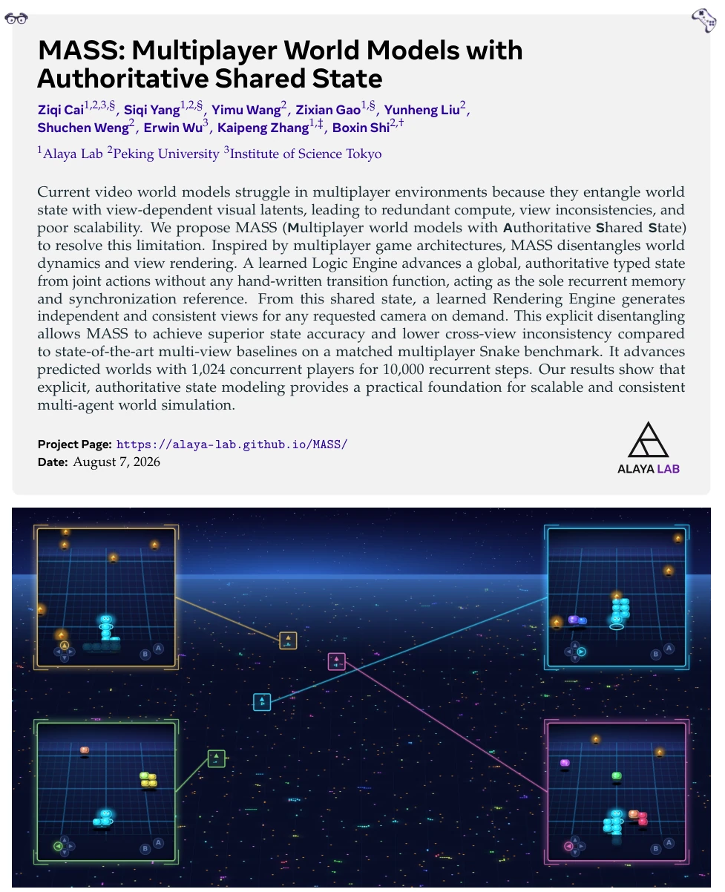
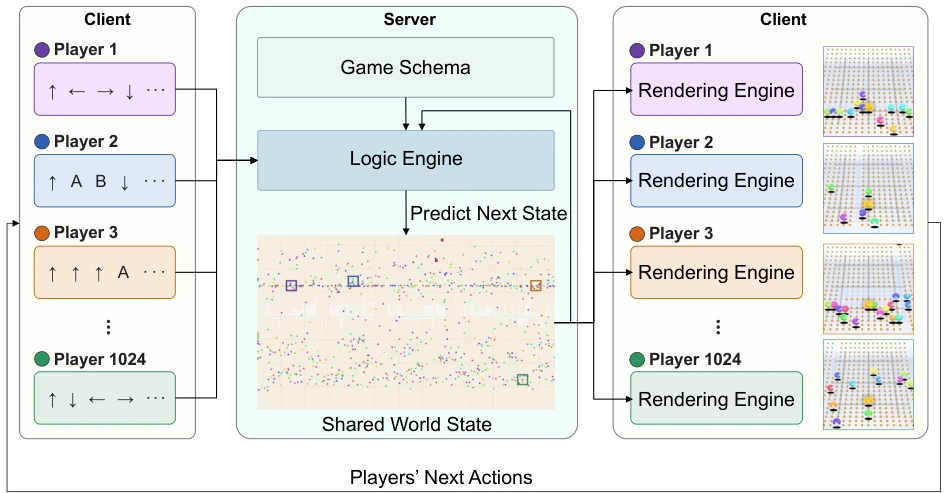
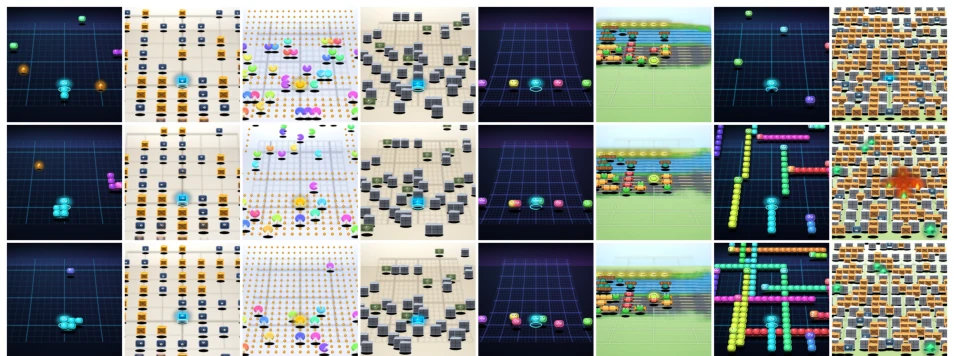
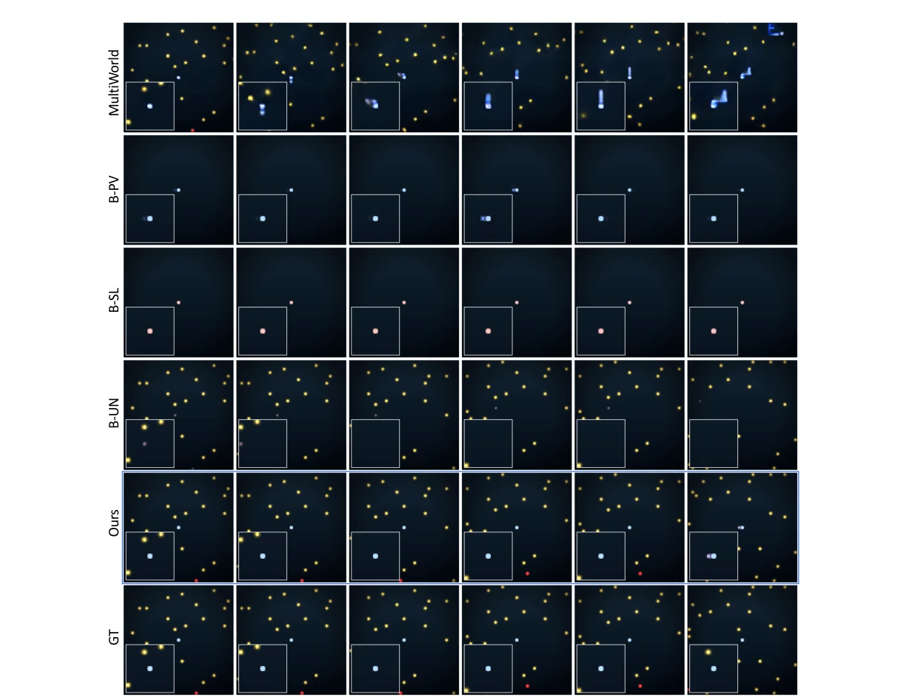

这篇论文给视频世界模型来了个“服务器架构”的降维打击。以前的模型像单机游戏，每个视角都记一遍历史，人多就乱套。MASS 直接照搬网游的权威服务器逻辑，把“世界状态”和“画面渲染”拆开。好处是状态准、人多不崩，坏处是得先写 Schema 定义实体，感觉像是给 AI 套了个游戏引擎的壳。虽然 1024 个蛇玩 1 万步挺唬人，但 2D 格子游戏毕竟不是 3D 开放世界，这“权威状态”在复杂物理交互里还能不能 hold 住，得打个问号。不过至少解决了多视角打架的硬伤，算是给多智能体模拟找了个靠谱的中间层。这种解耦思路值得借鉴，但泛化到非结构化环境仍需验证。
This paper delivers a "server architecture" dimensionality reduction strike to video world models. Previous models are like single-player games, recording history for each view, becoming chaotic with many users. MASS directly adopts the authoritative server logic of online games, separating "world state" and "image rendering". The benefit is accurate state and stability with many users; the drawback is the need to write a Schema to define entities first, feeling like wrapping AI in a game engine shell. Although 1024 snakes playing 10,000 steps is quite impressive, 2D grid games are after all not 3D open worlds, so whether this "authoritative state" can hold up in complex physical interactions remains questionable. However, it at least solves the critical flaw of multi-view conflict, counting as finding a reliable intermediate layer for multi-agent simulation. This decoupling approach is worth referencing, but generalization to unstructured environments still requires verification.
Existing video world models (such as GameNGen [27], Oasis [7], Genie [4]) perform well in single-player scenarios, but reveal their limitations in multi-player environments. They entangle world state and visual latent variables, causing each view to maintain an independent recurrent history, which is not only computationally redundant but also prone to inconsistencies between views (e.g., two players seeing the same snake's position differently). Gamma-World [16], MultiWorld [28], etc., attempt to share visual representations, but lack explicit typed state as a synchronization object. MASS borrows from online game architecture [3, 6], believing world simulation should be independent of rendering, requiring an authoritative, typed state as the unique memory source, otherwise it cannot scale to thousands of players. This architecture separation is the key to solving multi-agent consistency.

Figure 1 A predicted Snake world with 1,024 players. The center visualizes the authoritative typed state. Four screens show learned renders for selected client cameras and the gamepads show their current actions.
The overall process is divided into three steps: Tokenizer -> Logic Engine -> Rendering Engine. First, the World State Tokenizer encodes game entities (such as snakes, food) into typed records according to the Schema, ensuring the state is parsable and unambiguous. Second, the Logic Engine is the core, using a Decoder-only Transformer to advance the global state based on joint actions, without hand-written rules, where state is memory. It ensures structural validity through record-level prediction and Mask constraints. Finally, the Rendering Engine generates images from predicted state and camera parameters, implemented using U-Net. The key innovation lies in "decoupling": state update runs only once, rendering is performed on demand. Clients can also predict using the local Logic Engine when server update latency occurs. The Schema mechanism allows new games to only change configuration without changing architecture. This design allows world dynamics and view synthesis to be evaluated independently, improving scalability.

Figure 2 Overview of MASS. Clients send player actions to the server each tick. The game schema defines the typed state, and the learned Logic Engine advances it from the joint actions to produce the next world state. The updated state is distributed to clients, where each Rendering Engine generates a player view from that shared state and the corresponding camera. Players then send their next actions, and the loop repeats. The world transition runs once per tick, while views are rendered on demand.
Compared MultiWorld, B-PV, B-SL, B-UN on the Snake benchmark (128 tick, 128x128). MASS reached 0.764 on Parser recovery, far exceeding B-PV's 0.128. X-view inconsistency is 0.000, proving view consistency. It can also scale to 1024 players, 10,000 steps. Cross-game tests (Pac-Man, Bomberman, etc.) show good PSNR performance. Ablation experiments show typed carrier maintains entity identity better than dense grid. Client prediction tests indicate avatar position is accurate under local actions. These results validate the effectiveness of authoritative state in long-horizon simulation, and maintain structural integrity without hand-written rules.

Figure 3 State-conditioned renders across eight games. Columns show Snake, Crate Pusher, Pac-Man, Tank Battle, Lunar Touchdown, Frogger, Tron, and Bomberman. Rows show different timesteps.

Figure 4 Frames from a held-out matched Snake rollout. Rows compare MultiWorld, B-PV, B-SL, B-UN, MASS, and the ground truth.